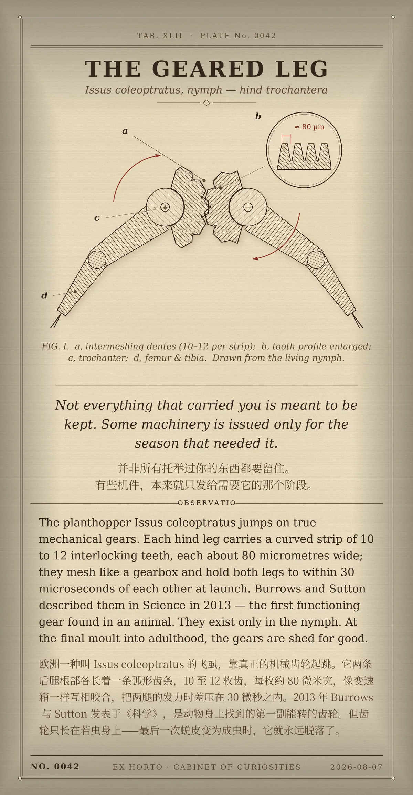

Not everything that carried you is meant to be kept. Some machinery is issued only for the season that needed it. / 并非所有托举过你的东西都要留住。有些机件，本来就只发给需要它的那个阶段。
The planthopper Issus coleoptratus jumps on true mechanical gears. Each hind leg carries a curved strip of 10 to 12 interlocking teeth, each about 80 micrometres wide; they mesh like a gearbox and hold both legs to within 30 microseconds of each other at launch. Burrows and Sutton described them in Science in 2013 — the first functioning gear found in an animal. They exist only in the nymph. At the final moult into adulthood, the gears are shed for good. / 欧洲一种叫 Issus coleoptratus 的飞虱，靠真正的机械齿轮起跳。它两条后腿根部各长着一条弧形齿条，10 至 12 枚齿，每枚约 80 微米宽，像变速箱一样互相咬合，把两腿的发力时差压在 30 微秒之内。2013 年 Burrows 与 Sutton 发表于《科学》，是动物身上找到的第一副能转的齿轮。但齿轮只长在若虫身上——最后一次蜕皮变为成虫时，它就永远脱落了。
冷知识由执笔的模型自行查证。逐条断言、来源与所引原句存档在纯文字副本里，未经程序逐字校验，留作事后核实。